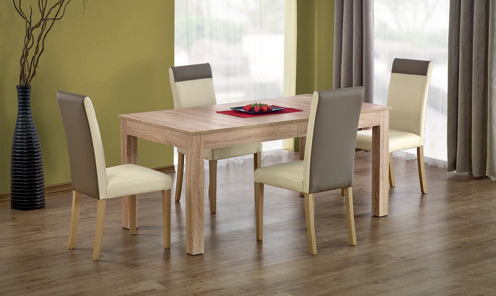

Stalai | Furnibay
 Apie mus Blogas D.U.K Kontaktai Norų sąrašas Prisijungti
Apie mus Blogas D.U.K Kontaktai Norų sąrašas Prisijungti
NEMOKAMAS PRISTATYMAS VISIEMS BALDAMS
€ 0.00 (0)
Krepšelis
+3706 949 4449
Valgomojo Baldai Baro Kėdės Kėdės Komodos Stalai Indaujos Svetainės Baldai Foteliai Kavos Staliukai Konsolės Pufai Sekcijos Sofos Šoniniai Staliukai TV Staliukai Miegamojo Baldai Dvigulės Lovos Komodos Spintelės prie lovos Čiužiniai Minkštasuoliai Interjero Detalės Aksesuarai Veidrodžiai Kilimai Paveikslai Šviestuvai Lubiniai Pakabinami Sieniniai Staliniai Toršerai Biuro Baldai Darbo Stalai Biuro KėdėsStalai
Apvalūs Stalai Išskleidžiami Stalai Standartiniai Stalai Visi RūšiavimasFiltruoti pagal kainą
Rikiuoti pagal
Produktų Stilistika
Auksas interjere Dovanu kuponas Elegantiška forma, paryškintas medinis išlenktas kūnas. Komfortas ir išskirtinumas yra keletas šios koncepcijos pagrindinių savybių. Elegantiškas formos siekis paverčia kiekvieną erdvę patogia ir modernia. Ispaniški Trendai Išskirtinės formos kėdė sukurta keliems tikslams ir pritaikyta skirtingoms auditorijoms. Kalėdinis terminas Klasika Komplektuojamos Lovos Komplektuojamos Sofos kėdė Modernas Modernios klasikos kolekcija Portugališki baldai Su miegamu mechanizmu valgomojo kėdė Šiandienos trendai Pradžia / Valgomojo Baldai / StalaiRodoma 1–24 iš 104
Stalas Furnibay
€ 1,390.00 160 x 76Stalas Bresso
€ 552.00 – € 658.00 80x140x75 cmLUNGO apvalus stalas
€ 363.00 120x120x76 cmLOOPER apvalus stalas
€ 169.00 115x115x76 cmGLAMOUR stalas
€ 334.00 90x160x76 cmStalas Retro Wood
€ 595.00 90x150/200x75 cmAVELAR apvalus stalas
€ 242.00 120x120x76 cmStalas LORENZO
€ 590.51 90x160-200x75 cmValgomojo stalas Karat
€ 370.00 75x100Valgomojo stalas John
€ 555.00 73x95Valgomojo stalas King
€ 1,260.00 76x90x190Valgomojo stalas Maximus
€ 1,658.00 – € 2,020.00 76x100x180/200/210/220/230/240Valgomojo stalas Rotterdam
€ 1,450.00 – € 1,840.00 76x100x200/220/240Aplvalus stalas Oddysey
€ 1,488.00 – € 1,850.00 77x120/130/140/150Valgomojo stalas Leviathan
€ 1,848.00 – € 2,175.00 76x180/200/220/240Valgomojo stalas Didi
€ 260.00 73x100Valgomojo stalas Marble
€ 970.00 – € 1,130.00 74 x 90/120Stalas Glam
€ 425.00Baro stalas Move
€ 110.00 60 x 60-91 AKCIJAValgomojo stalas Kensi
€ 2,320.00 € 2,000.00 140 x 75 AKCIJAValgomojo stalas Black 2
€ 2,001.00 € 1,800.00Valgomojo stalas Black
€ 1,652.00 220 x 76Valgomojo stalas Dinasti
€ 1,565.00 130 x 76Valgomojo stalas Grand
€ 873.00 73 x 110 1 2 3 4 5Valgomojo stalas vienas populiariausių baldų skirtų virtuvės/valgomojo zonose. Didelis dėmesys skirtas stalų kojų arhitektūrai. Interjerą puošia stalo atramos išskirtinės formos. Apvalus stalas pamėgtas mažos kvadratūros butuose, Išskleidžiami stalai ypač funkcionalus dėl skirtingų poreikių.
© 2020 UAB Furnibay |
Pirkimo Taisyklės Prekių grąžinimas Kontaktai*Be UAB Furnibay sutikimo draudžiama kopijuoti ir platinti svetainėje esančią informaciją.
Facebook Instagram Google Twitter Linkedin Tumblr Mūsų svetainėje naudojami slapukai, kad užtikrintume jums teikiamų paslaugų ir aktualių pasiūlymų kokybę. Jei sutinkate, spustelėkite mygtuką „Sutinku". Sutinku